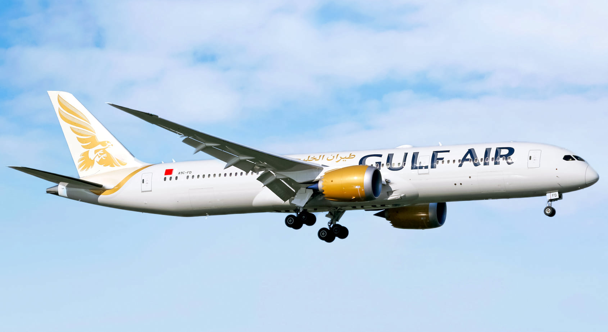

Gulf Air Launches Direct Service to JFK with First Arrival and Departure

Published October 1 2025
Gulf Air, the national carrier of the Kingdom of Bahrain, recently restored direct air service between Bahrain and New York-JFK using its Boeing 787-9 Dreamliner.
This marks Gulf Air’s first scheduled nonstop flights on this route in years.
The airline has announced it will operate three weekly flights between Bahrain and New York starting October 1 2025.
Initially these flights will use Terminal 1 at JFK.
Gulf Air positions this route as a strategic step in expanding its presence in North America and enhancing connectivity for passengers traveling through Bahrain to the Middle East, Gulf region, South Asia and beyond.
A9C-FG, GFA91, Boeing 787-9: Arrival October 1 2025
.png)
Flight GFA91 departed from Bahrain International Airport and landed at New York-JFK at 10:55 AM local time using Runway 04R.
This arrival marks Gulf Air’s return to serving New York directly.
The aircraft used, registration A9C-FG, is a Boeing 787-9 Dreamliner. According to aircraft registry data, this airframe first flew on August 16th of 2019.
The Dreamliner is known for its fuel efficiency, long range, passenger comfort, and modern technology such as advanced composite materials and improved air humidity in the cabin.
These features make it well suited for long overwater routes like Bahrain-New York.
A9C-FG GFA90 Boeing 787 9 Departure October 1 2025
.png)
After a turn of a few hours on the ground, GFA90 departed New York-JFK at 4:10 PM local time from Runway 04L to return to Bahrain.
This flight completes the inaugural round-trip service for Gulf Air.
This kind of turnaround requires efficient ground handling, refueling, boarding and security processing in a tight schedule at a busy international airport like JFK.
Route Strategy, Schedule, and Market Ambitions
Gulf Air’s relaunch of the Bahrain–New York route comes as part of a broader network expansion plan into North America.
The airline will operate three weekly frequencies (Sunday, Wednesday and Friday) to start.
By connecting New York to Gulf Air’s hub in Bahrain, the airline can offer onward connectivity across the Middle East, Gulf states, India, Southeast Asia and beyond.
According to industry reports, the service is intended to strengthen Bahrain’s role as an aviation hub and stimulate travel, trade, tourism and cultural exchange between the Gulf region and the United States.
Aircraft Profile: A9C-FG /
Boeing 787-9
The aircraft registration A9C-FG is part of Gulf Air’s 787-9 fleet. In public sources it is listed as Boeing MSN 39986.
The 787-9 is a mid-size, long-range twin-engine jet well suited to transoceanic routes. It features high fuel efficiency, lower emissions, and improved passenger comfort, such as larger windows, better humidity control, and smoother ride technology.
Gulf Air has been modernizing its fleet and positioning the 787 family as core to its long haul operations.
Timeline of Events
| Date (EDT) |
Time (EDT) |
Aircraft & Reg |
Flight |
Operator |
Route |
Notes |
| October 1 2025 |
10:55 AM |
Boeing 787-9 A9C-FG |
GFA91 |
Gulf Air |
Bahrain to New York JFK |
Inaugural arrival at JFK |
| October 1 2025 |
4:10 PM |
Boeing 787-9 A9C-FG |
GFA90 |
Gulf Air |
JFK to Bahrain |
Inaugural return departure |
Significance, Reaction, and Forward Outlook
The reopening of Gulf Air’s New York service is widely seen as a symbolic and strategic move. It reestablishes Bahrain’s direct link to one of the world’s major air travel markets.
Local Bahrain media highlighted that Gulf Air’s first flight marks the “restoration of direct link to the US market” after a prolonged absence.
Aviation media note that Gulf Air had long planned to expand in North America, and the New York route is among its flagship moves.
If the route performs well, Gulf Air may consider increasing frequency or adding more US destinations.